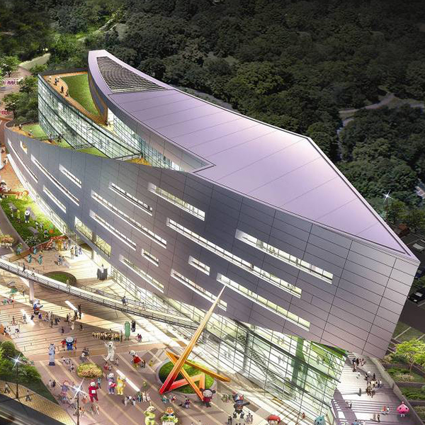
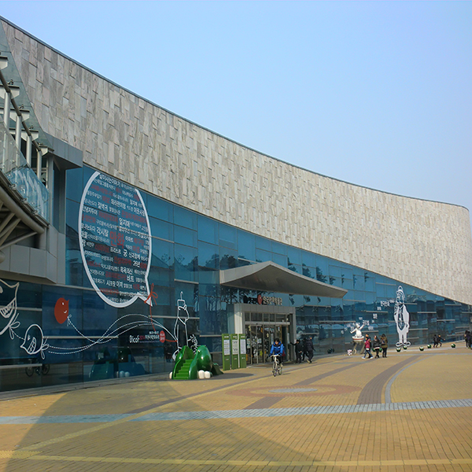
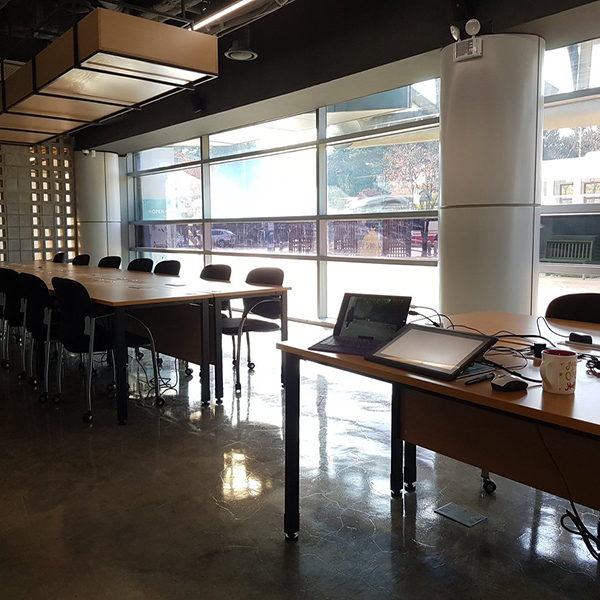
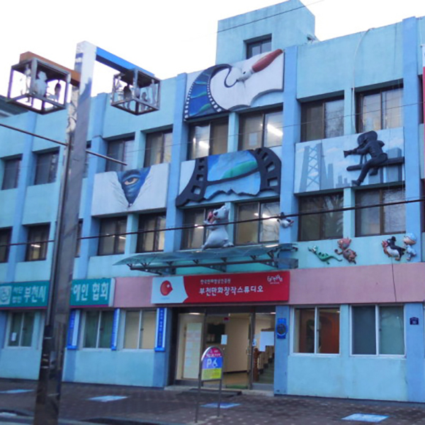
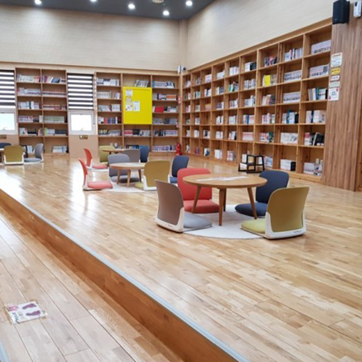
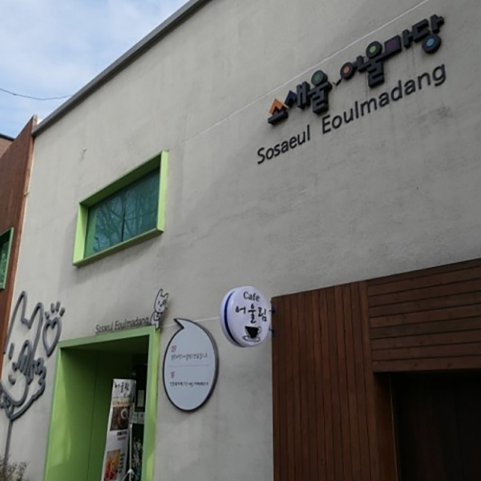

주요시설






한국만화영상진흥원은 대한민국 만화수도 부천을
대표하며,
만화비즈니스센터, 웹툰스타트업캠퍼스,
부천만화창작스튜디오, 소새울어울마당, 도당어울마당 등
500여 명의 만화가와 100여 개의 만화기업이
입주한 만화영상콘텐츠산업클러스터를 구축하고 있습니다.
만화비즈니스센터
1- 위 치
- 부천시 길주로 1(상3동 529-36)
- 시설규모
- 건축연면적 15,421㎡(4,665평)
- 건물규모
- 지하 2층 ~ 지상 5층
- 주요시설
-
만화작가실, 기업실, 만화단체 사무실, 진흥원 사무실,
교육실, 프로젝트실, 세미나실, DIAF 조직위원회
한국만화박물관
2- 위 치
- 부천시 길주로 1(상3동 529-36)
- 시설규모
- 건축연면적 8,342㎡
- 건물규모
- 지하 1층 ~ 지상 4층
- 주요시설
-
만화도서관, 아동열람실. 만화영화상영관, 상설전시실,
기획전시실, 체험교육실, 체험마당 등
웹툰스타트업캠퍼스
3- 위치
- 부천시 길주로 1(상3동 529-36)
- 시설규모
- 건축연면적 325㎡
- 건물규모
- 지하 1층
- 주요시설
-
오픈형 업무공간, 집중형 업무공간, 오피스공간,
네트워킹 카페, OA실, 회의실, 폰부스
부천만화창작스튜디오
4- 위치
- 부천시 부천로 136번길 30
- 시설규모
- 건축연면적 3,622,67㎡
- 건물규모
- 지하 1층 ~ 지상 4층
- 주요시설
- 창작실, 교육실, 상담실 등
도당어울마당
5- 위치
- 부천시 부천로 360
- 시설규모
- 건축연면적 436,98㎡
- 건물규모
- 지상 1층 ~ 지상 5층
- 주요시설
- 만화북카페, 키즈존, 스터디실, OA실, 사무실 공간
소새울어울마당
6- 위치
- 부천시 호현로 422-1
- 시설규모
- 건축연면적 329㎡
- 건물규모
- 지상 1층 ~ 지상 2층
- 주요시설
-
만화북카페, 카페데리아, 다목적 오픈공간,
생활문화연습장 등